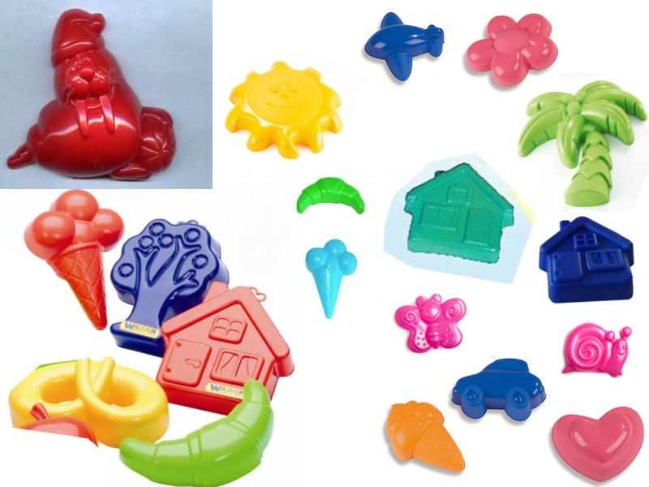
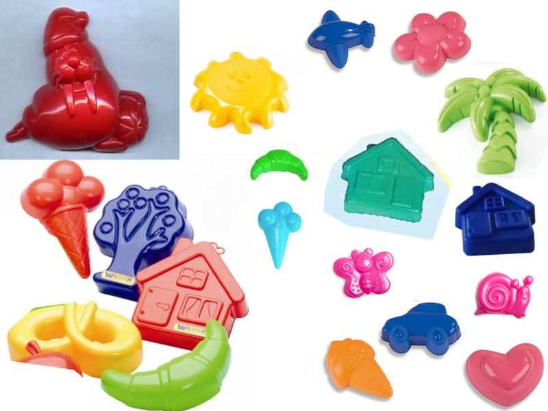
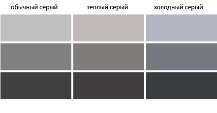
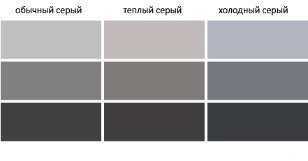

Константин Кривленя
Компания Taucraft
Все что может быть выражено в числах. Например,сколько в попугаях удав.
Ок. Я выбрал инструмент для построения графиков. Как мне выбрать нужный график для моих данных?


 


 
